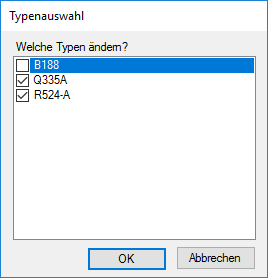

")
")
Ändern des Mattentyps bei einzeln oder gruppenweise (im Polygon oder Rechteck) verlegten Matten. ISBCAD prüft automatisch, welche Änderungen möglich sind.
Optionen |
Beschreibung |
|---|---|
|
Einzel: Auswahl einer oder mehrerer einzeln verlegter Matten. Gruppe: Auswahl einer Mattengruppe (im Rechteck oder Polygon verlegte Matten). |
|
Hinzufügen / Entfernen von Matten. |
|
Auswahl über Rechteck / Polygon / Einzel. |
|
Letzte Auswahl wiederherstellen / automatisch Rahmen bzw. Element selektieren. |


|
Hinweis: |
|
Wenn Mattentypen geändert werden, ändert sich normalerweise die Übergreifungslänge. Die Verlegung können Sie mit der Funktion [Matten | VerRec bzw. VerPol → VerÄnd] anpassen. |

Um den Mattentyp für einzeln verlegte Matten zu ändern
§Klicken Sie eine oder mehrere Mattendiagonalen an oder ziehen Sie einen Rahmen durch das Anklicken von zwei Punkten um die zu verändernden Matten auf. [1.Punkt/Element; 2.Punkt].
Gewählte Matten werden durch die hervorgehobene Diagonale markiert. Verwenden Sie gegebenenfalls die Option Entfer (im Funktionsbereich), um markierte Matten aus der Auswahl zu entfernen.
§Bestätigen Sie die Auswahl durch Rechtsklick.
§Falls der Dialog Typenauswahl geöffnet wird:
Ihre Auswahl enthält mehrere Mattentypen. Setzen Sie den Haken  bei den Mattentypen, die geändert werden sollen und klicken Sie auf OK.
bei den Mattentypen, die geändert werden sollen und klicken Sie auf OK.
 |
§Klicken Sie in der Liste unter Mattentyp auf den gewünschten Mattentyp.
Der gewählte Mattentyp wird allen markierten Matten zugewiesen. Sie können sofort eine oder mehrere andere Matten wählen. [1.Punkt/Element].
|
Hinweis: |
|
Die markierten Matten werden hinsichtlich der Größe überprüft. Wenn die Meldung "Matte ist größer als die Maximallänge" erscheint, ist mindestens eine der Matten für den gewünschten Mattentyp zu groß (z. B. kann aus einer Q636-A (2.35 x 6.00) keine Q424-A (2.30 x 6.00) werden. Sie müssen dann zunächst die Geometrie der betroffenen Matten anpassen. [Matten | Dehnen]. |
Um den Mattentyp gruppenweise zu ändern
Es können mehrere Verlegegruppen (Matten im Rechteck [VerRec], Matten im Polygon [VerPol]) ausgewählt werden. Die Selektion erfolgt über die Diagonalen und muss immer mit der rechten Maustaste bzw. der Eingabetaste abgeschlossen werden.
§Klicken Sie jeweils eine Mattendiagonale der gewünschten Verlegegruppe(n) an oder klicken und ziehen Sie einen Rahmen um die zu verändernden Verlegegruppen auf. [Welches Element].
Bestätigen Sie die Auswahl durch Rechtsklick.
Die Matten der gewählte(n) Gruppen werden durch die hervorgehobene Diagonale markiert. Verwenden Sie gegebenenfalls die Option Entfer (im Funktionsbereich), um markierte Matten aus der Auswahl zu entfernen.
Auch wenn Sie einzelne Matten dieser Gruppe zuvor geändert haben, werden alle Matten einer Gruppe erfasst.
§Falls der Dialog Typenauswahl geöffnet wird:
Ihre Auswahl enthält mehrere Mattentypen. Setzen Sie den Haken bei den Mattentypen, die geändert werden sollen und klicken Sie auf OK.
§Klicken Sie in der Liste unter Mattentyp auf den gewünschten Mattentyp.
Der gewählte Mattentyp wird allen markierten Verlegegruppen zugewiesen. Sie können sofort eine oder mehrere weitere Verlegegruppen wählen. [1.Punkt/Element].
|
Hinweis: |
|
Die markierten Matten werden hinsichtlich der Größe überprüft. Wenn die Meldung "Matte ist größer als die Maximallänge" erscheint, ist mindestens eine der Matten für den gewünschten Mattentyp zu groß (z. B. kann aus einer Q636-A (2.35 x 6.00) keine Q424-A (2.30 x 6.00) werden. Sie müssen dann zunächst die Geometrie der betroffenen Matten anpassen. [Matten | Dehnen]. |
Siehe auch:
·Durchbrüche in Mattenverlegungen erzeugen
Zugehörige Referenzen: